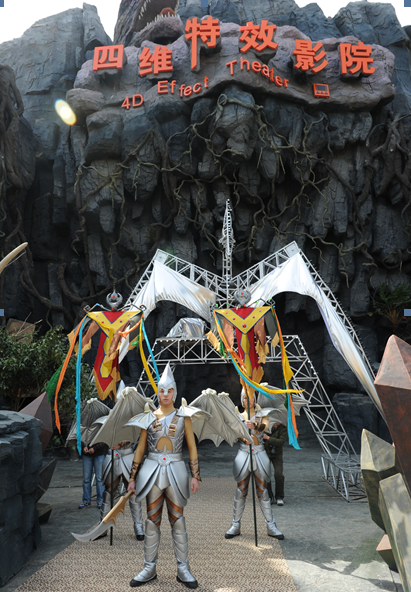

目及演艺：您想查询的游玩项目介绍：  恐龙基因研究中心（6星） 作为华东首个融合多项国际顶尖技术的超大型科技类体验项目，恐龙基因研究中心以神秘恐龙孵化基地为主题，营造出逼真的恐龙生活场景，采用一条完整故事线贯穿于环境、剧情和娱乐项目之间，置景、视听、特效、故事、服化、道具、社交、衍生品等各个不同的方面进行体验配置。项目分为研究中心大楼（室内步行体验区）及古生态复原区（室外车行体验区）两部分。建筑内部设立了入口大厅、资料室、监控室、实验室、上下车区、补给站等，给游客带来全方位的沉浸式体验。 4D过山龙（5星） 过山车最高79米，5T重力加速度瞬间提速至126km/h，过山车集合了悬挂式、座位式等多种过山车的特点于一体，采用两翼外延式的座位仓，游客坐在轨道两侧的座位仓中完全悬空，座位仓采用非固定的形式，目前是世界第三台也是国内第一台4D过山车。 飞跃恐龙山（5星） 黑暗的夜空，游客乘坐翼龙造型的车辆，配合声光电感应特效。整个过程中充满刺激和未知，由于整体式黑暗的空间，所以和室外过山车截然不同时，你永远不清楚前方会发生什么样的变化，会跌落、会转弯、会翻转、一切都是未知的。 水火动力（5星） 设备有意大利Zamperla公司制造，每次乘坐36人，游客乘坐在座椅上，当机器开动后，能将游客抬升至13米的空中，突然，座椅开始像波浪一样翻滚，游客在空中前后翻转，脚下，一股股激流喷射，更有火焰特效，进行高难度翻滚。
|